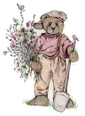

<html>
<head>
<title>
Tweetybirdgenealogy
</title>

<script src="http://images.rootsweb.com/js/fp.js" type="text/javascript"></script></head>
<body background="txbkgd.jpg"><script type="text/javascript">writeHeaderFP();</script>

<center>
<h1><font color="green">
<font face="Lucida Calligraphy">VOL. XXXII #2 MAY. 1930, WEDDING BELLS</a>
</font color="green"></a>
</h1></a><pre><font size=3><b>
<p><font color="black">
From: Gail Collins <gcollins@vaxxine.com>

There are a total of 472 marriages recorded in this May 1930 issue.
</center>
It appears to me that this letter writing campaign could also have been a
blitz in order to drum up Donations for the Williams/McCall Memorial Fund
to rebuild Stepney Causeway,

as evidenced by a letters from Old Girl's: (rem this was now 1930)

one married since 1894, "I received your letter asking how I progressed
since married."
another 1894, "you have no idea how pleased I was to know you were still
interested in my welfare"
one 1895, "imagine my surprise & excitement when I received your letter
....  for as you know 45 years is a long time to be remembered."

The Jan 1930 Editorial mentions that old & young girls have voluntarily
contributed twice as much as the boys.  The May 1930 Donation list for the
Williams/McCall Memorial Fund contained 815 names - Dec 1930 another 108.
Donations by the girls was in the 60% range.

I also wonder how many female BHC’s married a male BHC - it would be wise
to read each female/male name with an open mind.

It’s also interesting that a number of sisters seem to have married on the
same date.  The earliest marriage recorded here is 1883.

I sure don’t understand the date order - perhaps it means they are recorded
here in the order the girls re-contacted the Home as to their married life
''after all these years''?

Please have me confirm name & dates in case of transcript errors.

Gail Collins    gcollins@vaxxine.com
***********************************************************

Copies of this issue are available from Periodicals Dept at Toronto
Reference Library by interloan through your local library.
<center>
UPS and DOWNS
5 May, 1930

WEDDING BELLS
</center>
Marriages Recorded in 1929 (in date order)
The Management Hereby Desire to Express Their Congratulations to All

Florence Paddington            2.06     Mrs McMillan      
Edith E Rodgers                2.23     Edgar H Schofield
Gertrude Mosely                4.20     Fred Jackson      
Nellie Woodage                 2.06     William Howe
Eliza Cutmore                  3.11     Fred Belarnger    
Violet Howard                  1.22     Clinton Allin
Winifred D T Stackhouse        1.25     Lawrence Schadler 
Harriet Aplin                  1.15     Joseph J Bensette
Florence Woodage               3.06     Ernest Chapman    
Florence Church                3.20     F W Yates
Lily Down                      1.14     John crighton    
Bertha Warren                  1.06     Ira Outwaters
Iris Kay                       3.21     Norman Cowper     
Ethel Boddy                    1.14     Roy Stewart
Frances E Walker               2.13     Harry Dewdney     
Gladys Gibson                  2.20     Albert Staddon
Edith A Lloyd                  4.06     William Thibo     
Louise Lawson                  1.05     Mrs Young
Elizabeth Johnston             2.23     George Hamilton   
Maud Prichard                  1.11     Dennis Blowns
Georgina H Pegg                4.07     Herbert Davies   
Phyllis Stockely               2.20     W F Noakes
Gladys Martin                  1.20     Victor F Fudge    
Hannah Sherrard                3.04     S Hamilton
Annie Shafto                   3.02     W H Mullen        
Priscilla Sherrard             2.05     Stanley Mc Dougle
Mary Ward                      1.14     Everett Cook      
Gladys Seabourne               1.05     Mrs Bowins
Beatrice Balmforth             2.06     Mrs Bruy          
Margaret Marshall              3.05     M J Patton
Rose Mills                     3.01     Orval L Redick    
Elizabeth Alleyne              1.03     Mrs Jones
Jennie Fice                    2.11     Mrs Mery          
Beatrice Sandford              3.12     W J Halward
Ada Ballard                    3.12     Norman  Shear     
Elsie C Pullen                 3.23     James Watt
Mabel Hawtin                   2.01     W P Murphy        
Elizabeth Lambert              3.05     Edward Senior
Marion H Coleman            ?107.10     Clarence Hayes    
Alexandra V Bailey             1.14     L H Hartie
Winifred Lunn                  2.20     M B savage        
Ethel M Sturdy                 2.09     Albert Fear
Eileen B J Bullock             3.20     Elvin Irwin       
Florence Harvey                2.23     T G Slade
Gladys F Lee                   3.23     Joseph Smith      
Nora Dodd                      2.11     W G Topp
Dorothy A Froggett             2.09     Arthur Chapman    
Edith M Hall                   3.23     Eric Munro
Barbara Drysdale             ?105.9     John A Denny      
Margaret Hodson                 -98     G Thomens
Minnie Bassett                 1.24     A Adams           
Lily Hatchcroft                3.13     Max Glover
May Collett                    1.11     ?Charles Rylett    
Florence Gibbons               2.07     W C Shaw
Matilda Downes                 2.04     S Smith           
Alice Messenger                2.03     W Watson
Emily Messenger                2.03     H Rives           
Lilian Tuissant                1.15     Alton Jones
Florence G Turnbull            3.05     P M Wilson        
Ivy O G Farley                 2.04     Harry Thompson
<center>

</center>
Sarah J Taylor                 3.03     Fred Usher        
Dorothy Tendall                1.22     A G Bossert
Florence M Clark               1.23     George Whiskens   
Ellen Watson                   2.05     Mrs Nutley
Rachael Pridmore               1.14     J F Hendries      
Christina McDonald              -87     S P Smith
Mary Pelan                     2.14     Walter Pocock     
Kate Holmes                    2.99     James Brett
Mary Bayliss                   3.04     Mrs Dolman        
Daisy W Williams               1.03     Ross Ryder
Edith Nash                     1.04     Bert Hopkins      
Alice James                    2.12     T Barber
Rosina Schmidt                 4.06     Jack L Hemphill   
Alice E Jarvis                 2.12     R Morris
Emily Lucy                     4.10     Fred Chapman      
Annie Morton                   3.05     C S Cochrane
Louisa Morton                  3.05     James Mitchell    
Ada W Hunt                     3.11     W Freer
Harriet Freeman                3.05     Ross Hillier      
Olive B Culpin                 2.21     Nicholas Simpson
Cecilia Wood                   2.11     W Milden          
Gertrude Osborne               2.20     John A Jones
Jane Violet Pinchen            3.14     Clarence Brown    
Emma Brodfield                 2.02     Mrs Castonette
Ada White                      3.20     Fred G Ross       
Winifred L Rodway              8072     John McLeod
Winifred Jones                 1.21     J Davey           
Gladys Harvey               ?105.14     Ronald Dwyer
Mary Tebbuts                 ?96.35     W Mintz           
Beryl Johnston                 2.21     Stanley E Knight
Violet Toms                    1.21     Hector Cunningham 
Frances E Gibbs                3.20     Charles Bell
Ethel Latham                   1.21     Mrs Maginns       
Mary Morton                    3.05     John Boyle
Henrietta Webb                  .02     Herbert Rowell    
Annie Millington                .11     Ernest H Morris
Nellie Brown                   2.14     Alex Shaw         
Mildred Albon                  1.05     Mac McNeil
Violet Harris                 11.20     Robt. McClimond   
Bertha E V Bates               1.11     Mrs Hobblethwaite
Eva Sansom                     2.21     F Cluness         
Lilian E Butt                  1.14     Mrs Sewell
Emma Collins                   3.09     Fred Brown        
Beatrice Emerton               3.20     Mrs Henderson
Nellie Green                   2.21     Fleetwood Dixon   
Maud E Burgess                 1.11     W Robson
Gertrude Griffiths             1.01     J Pask           
Laura Bamsey                   2.06     Roy White
Minnie Thorne                  3.02     Art Barret        
Alice Richardson               1.86     Robt. Elbare
Ada R Lovick                   2.98     Willard Comrie    
Emily Trimmer                  1.21     Mrs Munce
Cora Trevenna                  2.21     J G Haslem        
Beatrice Betty                 3.02     Fred Rowden
Evelyn Caunt                   2.20     George Tyler      
Doris E Mead                   1.21     Ernest J Taylor
Rebecca Donnison               2.14     Sylvester Moony   
Tiny Baker                     2.06     H Summers
Maud Thorogood                 2.04     G Emeny           
Margaretta M Rudloff           1.12     H Conyon
Dorothy Fuller                 3.13     Cyrus Summers     
Florence B Tillett              .97     Mrs Williamson
<center>

</center>
Jessie F Layzell                .05     William Uncer     
Phyllis Brownsell              3.14     Mrs Wood
Florence Larkin                3.14     W G Brown         
Minnie H Carter                3.14     Norman L Philp
May E Mycock                   3.13     J R Sowden        
Mary J Halliday                3.13     Thomas Nicolson
Dorothy Greenway               3.13     Mrs Falconer      
Dot Haxby                      3.13     Mrs Bartlett
Kate Stranger                  4.06     Mrs Taylor       
Dorothy M Stranger             4.06     Mrs Juffs
Alice Eatley                   2.22     E R Gale         
Daphne Goodwin                 2.13     Robt. L Rupert
Ada M Elliott                 12.20     John Hartley      
Ellen Lodge                    2.13     Roy Barton
Lilian Jennings                2.13     Wilbert Widdlfield 
Sophia Bunker                  3.10     Clarence Weaver
Elizabeth Royal                2.13     George Nelles     
Katherine O Robinson           2.13     R J Kean
Queenie R Pitman               2.13     Harry McDonald    
Hilda Lee                      3.13     Stanley Lamb
Emma McKechnie                 2.13     Thomas Neill      
Gertrude Sales                 3.13     John Perry
Mary Houghton                  3.13     Clifford Teetzel  
Violet Hope                    2.13     Bert Stayton
Alice Russell                  2.13     Joseph Draffen   
Daisy A Arden                  2.13     Wesley Hutchinson
Esther Wright               ?101.65     Harold Nelson     
Edith Euridge                  1.21     Cecil Moore
Lily Alderson                  1.13     Russel J Hankins  
Gladys Gibbs                   2.13     G Welssenborn
Amy E Hollamby                 3.23     Harold R Dyball   
Rose Banks                     1.13     Herbert Smith
Daisy Budd                    ?8139     Oakley H Gough    
Sarah A Newton                 1.96     S Williams
Lilian A E Cloughtman          3.20     Frank Parker      
Dorothy Chinnock               2.23     Bernard A Caligan
Frances Johnson                3.20     Stirling Carpenter
Ada A Ashby                    3.01     Charles Lewis
Elizabeth Stone                2.24     Jack Richards     
Margaret Payne                 1.20     Fred Pike
Phoebe Harland                 1.13     G H Broughton     
Annie Hung                     2.02     W H Stickles
Lily Hampson                   2.99     Mrs Moore         
Caroline Palmer                2.20     Mrs Leuchener
Lilian Clark                  ?8083     Alfred Barr      
Amy A Humphrey                 2.13     Alfred Culley
Agnes Hastings                 1.13     Arthur Carver    
Dorothy M R Roffey             1.22     Wyndham Williams
Hilda Hancock                  2.13     Frank Clark       
Gladys L Rogers                3.14     Walter Mills
Ethel Watson                   3.13     William Long     
Kathleen Marshall              2.12     Thomas Andrews
Dorothy Funnell                2.13     Carman Day       
Lily A Jackson                 1.04     Michael Furyk
Ada E Nesbitt                 ?8930     George Burgess   
Emma Barnfather                2.02     Edward Cairns
Doris T Gillett                3.20     Thomas Harris    
Emily Kearns                  ?8637     Mrs Morrison
May Cox                        2.21     A A B Demaline    
Ada Caygill                    1.06     M L Stone
Phyllis Owen                   2.27     W G Vickers       
Alice Scotney                  2.22     Wilson Smith
<center>

</center>
Margaret A Duff                3.04     William Ball      
Fanny Sawyer                   2.14     Charles E Hone
Ethel M Reid                   4.09     Sylvester Holden  
Ada H Richardson               3.02     H J Smith
Elizabeth East                 2.13     Richard Roberts   
Ada Barton                     1.05     William Wilson
Jane Howard                    4.10     Gordon Scott      
Nellie M Faiers                2.13     James Cant
Jennie Coggins                ?8124     Mrs McTaggart     
Annie Bradley                  1.03     Sam Stollard
Kate Squires                   1.13     W F Aitcheson     
Ada Pugh                       3.13     Cyril Wright
Lydia Baker                    3.06     Orville Miller    
Ella Hicks                     3.20     Charles Benson
Hilda Austin                   2.10     Goldie James      
Florence Richards              2.08     Henry Page
Christina Groombridge          4.10     Walter Miller     
Alice Mansfield                3.05     Matthew White
Mary Ferguson                 ?8027     James Brown       
Doreen Stevens                 3.23     Jack Bell
Olive G Kelly                  1.13     Albert Hooker     
Ethel Baker                    4.07     Charles Nixon
Mary Tidy                      3.01     John Gallagher    
Ellen Salthouse                2.15     Mrs Ogden
Kathe L Lowing                 3.12     Stanfford Benson  
Margaret Barker                3.13     Reginald E W Pearce
Leah K Ellis                   4.08     W Landridge       
Bessie K Fairweather           2.11     Harold E Older
Elsie Baines                   3.12     Mrs Goodwin       
Caroline E Smith               3.12     Garfield E Bardau
Winifred Allwork               3.13     W L Beattle       
Nellie Keane                   1.12     Thomas Hoag
Jane Farrow                    2.12     Chas. Roy Turnbull 
Celia E Pople                  1.14     C V Martin
Florence Manton                2.12     Jack Kennedy     
Mabel H Coles                  3.09     Clifford Chapman
Ellen Weldon                   3.12     C A Blanchard    
Emily Skull                    2.12     Robert Dunbar
Edith Wheeler                  2.23     J H Ryan          
Edith M Read                   2.13     Charles Potter
Dora E Prince                  2.04     Elmer E Martin    
Cissie Newton                  3.20     T Wilson
Lily M Cooke                   3.09     B Past           
Nora Connor                    2.02     Mrs De Mills
Nellie Wilkinson               3.12     Walter Shantry    
Violet E Buckle                1.00     Mrs Goodgame
Elizabeth A King               3.12     Robert C VanAllen 
Florence Hann                  2.12     Mrs Grant
Isabel H Davison               2.23     George Shadlock  
Margaret Sunby                 3.12     Lelie Howard
Florence Williams              3.09     Robert Marks     
Rosetta Lavender               1.12     Tom Crnathon
Constance C Whipps             1.23     W V Harris       
Gertrude R V M Blunden         3.12     Arnold Gray
Gladys E Blunden               3.12     Joe Leblanca     
Mary E Findlay                 2.23     Alfred Holinshead
Violet M West                  3.21     Gordon L Moore    
Ivy White                      2.12     Charles Reaume
Harriet B Hann                 3.09     P Laws            
Audrey L Roscarla              1.12     Horace H Walker
<center>

</center>
Gertrude Farrier               4.07     William Mc Dowell 
Violet G Hayward               1.20     Earl Babcock
Victoria Magill                1.12     George Wiskins    
Clara O’Bryan                  2.12     Harry Eccles
Hannah Yard                    2.12     Mrs Levitt        
Doris Rand                     1.20     Maurice S Frayne
Kate Hibbert                   1.01     David Rolley      
Eliza Bridgman                 3.11     Harry Lowes
Dorothy a Clark                3.11     Stanley Bassett   
Elsie A Frost                  1.13     Benjamin Stem
Alice Howard                   2.06     George Copeland   
Emily Dirk                     3.08     S G Marlow
Sarah Groves                   3.08     Wm Mann           
Annie E Lucky                  1.13     Alfred Wardell
Christobel Freeman             1.12     Fred Barber      
Elizabeth Denyer               1.12     Mrs Bickell
Jane M Read                    3.11     J A N Wigle      
Ellen Burns                    3.11     J F Valley
Florence Maclean               3.11     Robt. Gillick    
Elizabeth Pomeroy              3.08     J H Lewis
Rosina K Stubbington           3.20     L Goldsmith       
Ada Margaret Morris           ?3071     W W Mack
Florence O Hancock             1.12     Bert Moran        
Florence Thurlbeck             3.11     Charles Lonnsbury
Elizabeth Norman               2.14     Robt. McClelland  
Janet Hodgson                  1.20     Raymond Zavitz
Lucy Flynn                     1.21     Christopher Eden  
Maud Freeman                   2.11     Fred Smith
Jane Rogers                    1.13     John Shaw         
Florence Taylor                2.04     William Paul
Alice Hudson                   1.03     Mrs Frost         
Florence M A Coleman           3.02     Norman Pinch
Alice S Midgley                2.11     James Wyeth       
Sophia Anderson                3.06     W Mellington
Annie Buckland                 2.11     Maurice Newlin    
Amy Dobbs                      2.11     James Stone
Blanche Brine                  3.11     Jack Johnson      
Hilda F Vincent                3.11     S Phillips
Gertrude Sewell                3.20     James Davis       
Rosetta Brightmore             3.11     Fred Fox
Elsie Coombes                  2.11     F G Reed          
Elizabeth Thompson             3.12     A Chambers
Kathleen M Taylor              2.11     Leo Hodginson     
Jessie Arnold                  2.10     William Blake
Helena Thorious                3.12     Bruce Douglas     
Alice M Morris                 2.11     Mrs Scarrow
Lily Fox                       1.13     Alfred Taylor     
Lilian Pearce                  2.14     Robert Jenkins
Beatrice Dover                 3.05     Arthur E Roberts  
Clara Angove                   3.12     Wilbert Vanfleet
Lily F Watkins                 2.09     Howard Massey     
Norah E Shaw                   2.27     Samuel Simmons
Daisy F Wallis                 2.11     William Ward     
Isabella Roberts               2.11     Orville Field
Kate Scrase                    1.06     J L McLean        
Doris Booth                    2.07     J Gowley
Amy Whittingham                1.08     Mrs Ludbury       
Ethel Harding                  1.02     Mrs Symington
Mabel Savery                   2.11     Wm McCraney       
Eva A Faulkner                 2.23     Norman Ferguson
<center>

</center.
Mabel Walker                            Mrs Smith        
Annie E Andrews                2.20     T McMahon
Annie Kempster                 2.11     Mrs Dewey        
Nellie F Gibbs                 3.12     Mrs Mercer
Sarah Ball                     2.11     Frank Morgan      
Elsie Bailey                   3.06     A Pinkney
Lilian E Day                   3.02     John Simpson     
Olive M Heaton                 2.11     Harry Holbrook
Edith Bonaquist                94.3     H J Morford       
Eva F Davies                ?106.13     C M Crennell
Lily Brown                    105.5     Lorne Wagg        
Lily Paddington                4.09     W C Evey
Elsie Redworth                 3.10     Ernest Elliott   
Alice Langbridge               1.06     Ashton McLaughton
Elizabeth Smithers             3.03     Mrs Dayman       
Rosina Smithers                3.03     George Perry
Rebecca Ashby                ?107.2     W A Read          
Annie Phillips                 3.10     W A Read
Selina Todd                    ?120     Mrs Pettit       
Mary Blackman                  3.14     W J Scroger
Grace Sheath                   1.13     Mrs Twiner        
Kate Armstrong                 2.02     Ross Long
Kate S Langford                2.20     R L Davis        
Gwendoline Johnson             2.20     Angelo Principe
Annie E Riddell                2.22     R H Ford         
Elizabeth M Kite                        Harry Brown
Julie Fung                     1.89     Wm Jarrett        
Clarice Levick                 1.14     Harry Jones
Ada Booth                      3.21     Ronald Grills
Phoebe L Minchin              ?7479     C D Madge
Emily Bailey                   3.06     David Lunn        
Sarah White                    1.13     Isaac Rawson
Alice Clark                    1.25     William Churchill 
Selina Nightingale             3.20     H F Leadbitter
Violet E Smith                 1.20     A W Pidgeon      
Lily Meddings                  2.99     Herbert Smith
Charlotte E E Lockett          2.11     Mrs Monkhouse     
Annie Wilson                 ?96.43     Albert Palmer
Frances Brown                  3.01     Charles Petheram 
Elizabeth Henson               1.14     Robt. A Patterson
Elsie Gough                  102.19     Stuart McFarlane  
Ellen Herd                     ?101     Andy Irwin
Evelyn Thompson                3.02     A Matthews        
Alice Ponting               ?26.285     Herbert Mitts
Maimie Smith                   3.02     George Davis      
Matilda Reed                   1.00     George Heacock
Olga Hakanson                  2.11     O Baynes          
Ethel M Horwood                1.22     W H Hales
Fanny Locke                    1.89     Clarence Butler   
Mary Guthrie                   1.11     Clinton Lewis
Alberta Stone                  2.20     Fred Iliffe       
Florence Holloway              2.20     Harold Reid
Eliza Hyland                   1.01     Mrs  Steinburg    
Clarice Worthington            1.11     Karl Johns
Hilda Temperley                1.12     Murdock R Taylor  
Bertha M Watts                 1.20     Harry Grieves
Kate Reynolds                  2.12     Fred Young        
Rosina Harris                  2.09     Finlay Dafoe
Sarah Joyce                    1.89     M Anthony 
<center>
</center>
Ada M Ellis                    2.15    August Billan
Emily Redrup                   1.08    Earle Doble      
Lily Stainer                   1.07    Arthur North
Esther Scott                   2.08    Wilton Rich      
Violet Unwin                   2.15    Leo Dillman
Adeline Temple              ?102.44    Mrs Adams        
Ethel Archer                   2.02    Walter Whitfield
Emily J Smith                  3.10    James Kellum     
Helen M Young                  2.02    Mrs Todd
Violet Turner                  2.05    Mrs Jones        
Kate Rose Irvine               2.24    Howard Miller
Gladys Davison                 2.20    Robert Drury      
Florence Bradford              2.11    Stanley Dayton
Annie Best                     3.05    W Johnstone       
Florence Smith                 2.11    Thomas Wagg
Emily L Hall                   3.00    Eldon Mills       
Lilian M Smith                 2.11    W J Bonwick
Mary Smith                     2.11    S J Best          
May Brownsword                 2.08    S J Best
Sarah Ann Southall             2.05    J A Percival     
Patricia Austin                1.11    Irving Morris
Elsie Hullyer                  3.06    Lance Watts       
Lorna Hullyer                  3.06    Jack Wilson
Gertrude Salisbury             1.03    James Stansfold   
Sarah Hewitson                 1.83    Mrs Speed
Florence Morris                2.02    R Watson         
Amy Farmer                     1.11    Robert Jenkins
Margaret Salisbury             1.03    C C Payne        
Florence Salisbury             1.03    Miller Creeg
Marton Silke                   3.02    James Kerr
Rebecca Pearce                 1.85    E J Ashfield
Lily Jordan                    2.02    David Sloan      
Florence Clemo                 1.83    Samuel Gaston
Lily Marsh                       89    Mrs Wilkes        
Margaret Ayres                 2.22    Orville Renauld
Doris H Farmer                 1.11    Archibald Barnett 
Edith Burton                   4.10    J McKee, Jnr
Sarah J Ashmore                3.11    Frank Allen      
Jessie Collett                 1.11    Harold Barker
Doris Albury                   2.15    Jack Harwood     
Ethel M Veale                  2.04    Wesley Shaw
Annie Owlett                   1892    A W Miller        
Elizabeth Walder               1892    Mrs Marks
Minnie Jackson                 1892    A D McIntyre      
Ethel Grice                    1.11    J Dusett
Patricia Brennan             ?105.3    Victor Jillard    
Margaret Barnfather            2.02    Charles Stodard
Jessie Scovell                 2.11    Mrs Thompson      
Beatrice M Hawkins             1.11    Arthur Smith
Beatrice Larking               1.11    Mrs Myles         
Phyllis Otley                  1.11    Cecil Causton
Margaret Chapman               3.20    Joseph Crooks     
Lilian A Dunkin                1.05    Samuel Best
Mary A Fortune                 3.06    Mrs Strickland   
Annie Slark                    1.11    William Phillips
Daisy Hawkins                  1.11    Mrs Laurie       
Ellen Chaney                   1.04    Fred Letheren
Alice Jessop                   1.84    Mrs Manning       
Florence Philps                1.84    Mrs Walker
Emma Sawyer                    1.89    William Bracken
<center>

</center>   
Henrietta Watts                1.93    Mrs Simpson
Nellie Clay                    1.85    Charles Ostrande 
Elizabeth Parsley              1.84    Mrs Jardan
Moly Bolton                    3.97    John Robertson    
Edith Baker                    2.02    John Zarn
Daisy Webster                  1.03    Russell Sanguines 
May White                      1.11    C W Oakes
Matilda Reeves                 2.11    Frank Norris      
Edith M Norris                 1.06    John Kern
Rosanna Barnes                 1.03    Archie Phillips   
Gertrude M Woods               1.11    Walter Mullen
Emily Hill                     3.20    Mrs Dubry         
Sarah A Bolton                 3.97    Elmer Gilbank
Annie Nystrom                  1.83    Dave Doherty      
Mabel Willis                   1.92    Mason Twiddy
Elizabeth Britton              1.00    A Whatley         
Priscilla Lawless              3.07    Bert Hogg
Emma Roberts                   1.95    E Lansdell        
Edith Dipple                   1.04    Mrs Emery
Grace M Baldwin                2.09    Fred Bradfield    
Fanny Naylor                   1.96    P J Donahue
Bessie Buckland                1.95    Percy E Smith     
Gertrude Pyrke                 3.13    Thos. Montgomery
Clara Slingsby                 1.88    J P Mullen        
Louise Dixon                   1.89    C J Balmer
Charlotte Wilden               1.88    John H Young      
Mary Hankinson                 2.23    Leslie Graham
Hilda M Smith                  3.21    J Robinson        
Sadie Wilson                   2.07    Robert Pattison
Phyllis Langbridge             1.13    Davie Guest  
Florence Allwork               4.10    Fred F Whaley
Letitia Gimlett                4.10    Wellington Wilson 
Amy Hitch                      4.10    Reginald Charleton
Minnie Smith                   2.10    C Cobbledick      
Margaret Bates                 4.10    Roy Burley
Rachael Tyler                 ?7002    Sam Bennett       
Alice Clay                     1.96    Alfred Burns
Lilian M Bennison              2.13    Joe Fleury       
Maud Nash                      3.04    George Servi?s
Lily Sage                      3.97    Mrs Hill         
Charlotte Taylor               3.97    H Greene
Agnes McCutcheon               4.10    E Hirleby         
Florence Atkin                 1.89    Jacob Brenenhart
Ellen Turner                   1.86    Byron Jackson     
Annie E McGregor               2.97    Mrs Elliott
Lydia Turner                   1.93    Mrs Bessey        
Elizabeth Ball                 2.20    F A Darvell
Dorothy Davies                 3.21    Peter Lawson
<p>
<center>
<p>
<i><b>
<p>
<a href="javascript:history.go(-1)"
onMouseOver="self.status=document.referrer;return true">BACK</a>
<p>
<a href="http://freepages.genealogy.rootsweb.com/~tweetybirdgenealogy/index.html"><font color"blue">
<p>
To Homepage</a>
</a>
</font face=Lucida Calligraphy">
<script type="text/javascript">writeFooterFP();</script>
</body>
</html>


